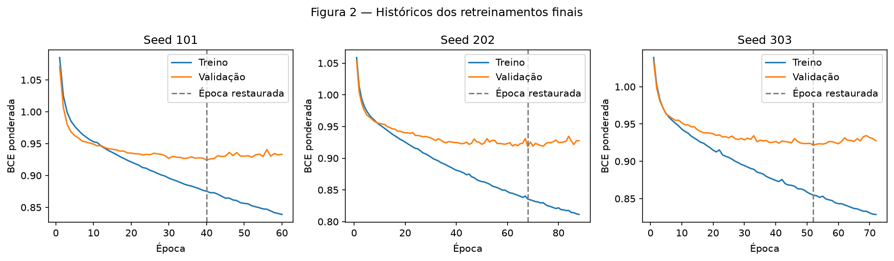
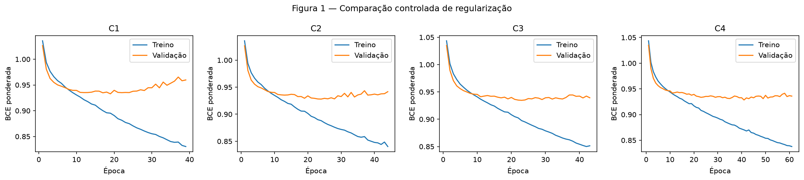
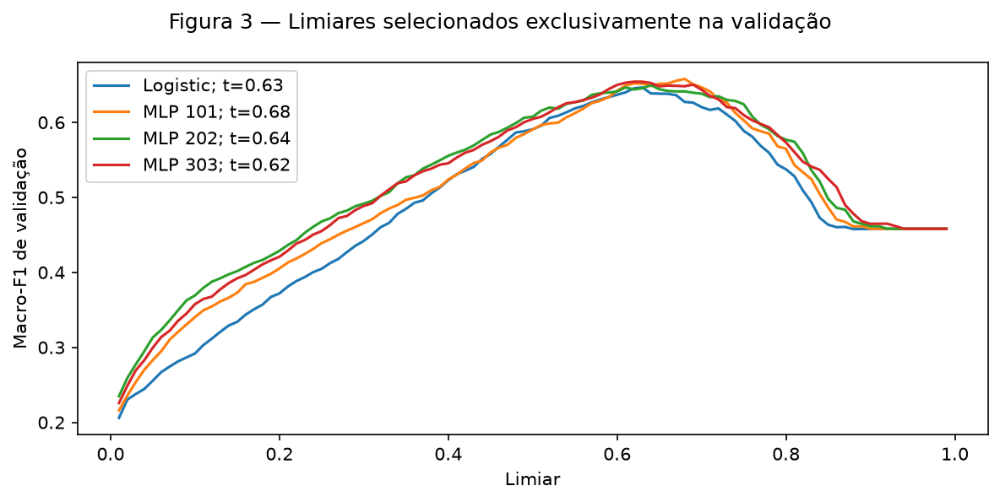
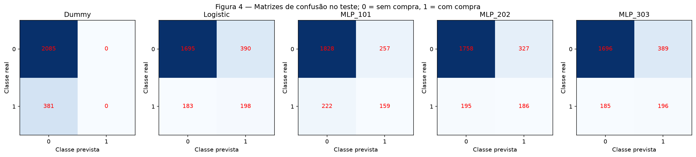
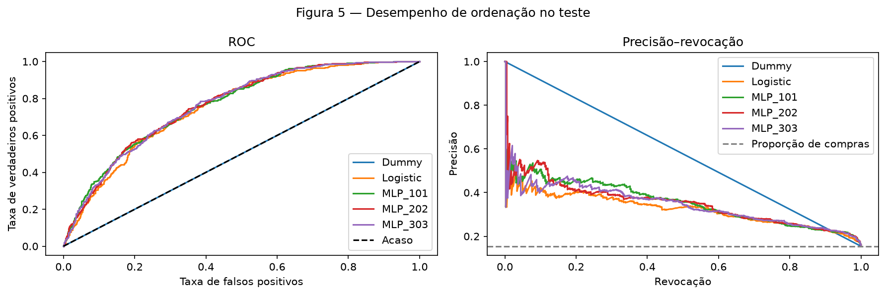
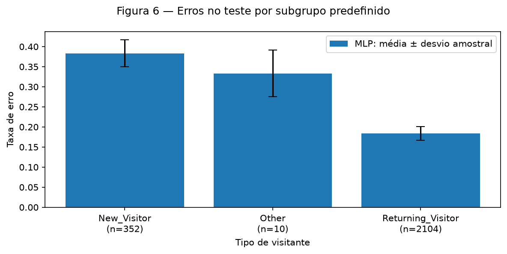
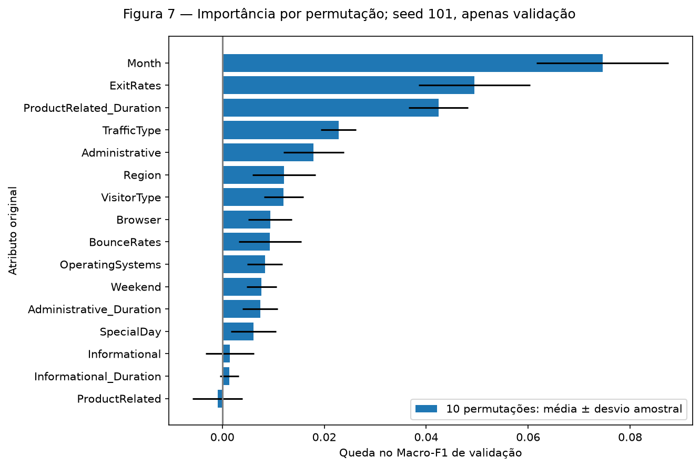

Online Shoppers — Classificação com rede neural
0 — Ponto de partida
Damos continuidade à EDA da base UCI Online Shoppers Purchasing Intention: 12.330 sessões registradas, com Revenue=True indicando compra. As 1.908 compras representam 15,474453% da base. Trata-se de classificação retrospectiva de sessões; o CSV não permite afirmar que todos os atributos estariam disponíveis antes da compra em uma sessão ao vivo.
train.py importa o módulo original da EDA. As nove variáveis numéricas recebem imputação pela mediana e padronização; as sete categóricas recebem imputação pela moda e codificação one-hot densa. PageValues permanece excluída porque sua disponibilidade temporal não está esclarecida, sem que isso comprove vazamento. Não acrescentamos engenharia de atributos, redução de dimensionalidade, remoção de extremos ou reamostragem. A representação tem 74 entradas. Não havia feedback externo de correção disponível.
Preservamos o primeiro particionamento original de StratifiedGroupKFold(5, shuffle=True, random_state=42). Hashes dos 16 preditores retidos mantêm vetores idênticos no mesmo grupo. O primeiro particionamento de uma segunda aplicação, com os mesmos parâmetros, divide apenas as 9.864 sessões do treino original:
| Conjunto | Linhas | Sem compra | Com compra |
|---|---|---|---|
| Treino interno | 7891 | 6669 | 1222 |
| Validação | 1973 | 1668 | 305 |
| Teste original | 2466 | 2085 | 381 |
O pré-processamento é ajustado novamente somente nas 7.891 linhas do treino interno. Validação e teste recebem apenas transform. A EDA já havia inspecionado as contagens do teste e a integridade das transformações; nenhuma predição de teste orientou a seleção de modelos. prepare reconstrói a divisão original; os carregadores usados nas etapas seguintes de treinamento recusam pedidos de linhas do teste.
Métrica principal pré-registrada: Macro-F1, a média sem ponderação dos F1 das duas classes. Sucesso: a média do Macro-F1 de teste das três seeds da MLP, menos o maior Macro-F1 de teste dos dois baselines fixos, deve ser pelo menos 0,02 em valor absoluto. O critério foi salvo antes do treinamento e não foi revisado. Precisão ou F1 indefinidos para uma classe são registrados como zero.
Consulte o protocolo com os índices exatos, as escolhas congeladas, os resultados numéricos completos, o histórico por época e as predições de teste salvas. O SHA-256 dos índices de teste é c89e8f23df3e55bc5af85208983c2ffca78e0a3b7264fbcc72a5347f481c9f87 (índices ordenados, inteiros de 64 bits little-endian).
1 — Modelos de referência (baselines)
Os dois baselines usam o mesmo pré-processamento ajustado e as mesmas linhas de treino interno. DummyClassifier(strategy="most_frequent") sempre prevê ausência de compra. A regressão logística usa lbfgs, regularização L2 com C=1, tolerância 1e-4 e limite de 2.000 iterações; convergiu sem aviso de falha de convergência. Os pesos das classes são {0: 1, 1: 6669/1222}. Não fizemos busca de hiperparâmetros desse modelo.
| Modelo | Limiar | Macro-F1 de validação | Macro-F1 em 0,5 | Precisão de compras | Revocação de compras | Acurácia |
|---|---|---|---|---|---|---|
| Dummy | 0.500000 | 0.458116 | 0.458116 | 0.000000 | 0.000000 | 0.845413 |
| Logistic | 0.630000 | 0.646574 | 0.590858 | 0.359202 | 0.531148 | 0.781044 |
A acurácia de validação de 0,845413 do Dummy esconde revocação zero para compras. A regressão logística aumenta o Macro-F1 para 0,646574, com revocação de compras de 0,531148 e precisão de 0,359202. Por isso, é a referência linear relevante.
Os limiares de decisão maximizam o Macro-F1 de validação entre 0,01 e 0,99, em passos de 0,01. Empates favorecem o valor mais próximo de 0,5 e, depois, o maior valor. Aplicamos o mesmo procedimento à MLP; o Dummy mantém a decisão pela classe majoritária. Não há custos comerciais quantificados: um falso positivo identifica uma sessão sem compra como compradora; um falso negativo deixa de identificar uma compra. Macro-F1 atribui o mesmo peso às classes, mas não representa uma função de custo monetário. Se o modelo orientasse uma oferta, FP poderia desperdiçar contatos e FN poderia deixar de alcançar um cliente relevante; esse uso não foi testado.
2 — Rede neural
A rede selecionada é 74 → 32 → 1, com ReLU e dropout de 0,20 após a camada oculta. Uma única camada oculta permite interações não lineares com capacidade pequena em relação às 7.891 linhas de treino. São 2.433 parâmetros treináveis: (74+1)×32 + (32+1)×1, ou 0,3083 parâmetro por linha de treino. As alternativas com 64 unidades e com camadas de 32–16 unidades têm 4.865 e 2.945 parâmetros, respectivamente; a contagem de parâmetros, isoladamente, não garante generalização.
Os pesos ocultos usam inicialização Kaiming normal para ReLU; a saída linear usa Xavier uniforme com ganho 1; os vieses começam em zero. O modelo retorna um logit por sessão. BCEWithLogitsLoss(pos_weight=5.457447) combina um cálculo estável de sigmoid e entropia cruzada com a razão entre negativos e positivos calculada apenas no treino, 6669/1222. Aplicamos sigmoid somente para obter os escores de predição. Os escores da perda ponderada não são apresentados como probabilidades de compra calibradas.
A arquitetura e o laço de retropropagação foram implementados diretamente em PyTorch, sem MLPClassifier nem framework de treinamento.
3 — Treinamento
Adam usa taxa de aprendizado 0,001, betas (0.9, 0.999), epsilon 1e-8, lotes de 128 exemplos e no máximo 200 épocas. As atualizações adaptativas são adequadas à representação tabular mista; 128 permite lotes pequenos e baratos em CPU. A taxa de aprendizado é constante. O weight decay é 0,001, com a penalização acoplada do Adam aplicada a todos os parâmetros treináveis, incluindo vieses; não se trata de AdamW.
A parada antecipada acompanha a BCE ponderada de validação, aguarda 20 épocas sem melhora estrita e restaura os pesos da menor perda. As perdas de treino e validação de cada época são calculadas em modo de avaliação, com dropout desligado e sem adicionar a penalização de pesos do otimizador à perda exibida. Assim, as duas curvas são comparáveis. Fixamos as seeds de Python, NumPy e PyTorch, uma thread de CPU, operações determinísticas do PyTorch e um gerador separado com seed fixa para embaralhar os lotes.
| Seed final | Melhor época | Época de parada | BCE de validação restaurada | Limiar de validação | Macro-F1 de validação |
|---|---|---|---|---|---|
| 101 | 40 | 60 | 0.924189 | 0.680000 | 0.657901 |
| 202 | 68 | 88 | 0.918129 | 0.640000 | 0.649675 |
| 303 | 52 | 72 | 0.921867 | 0.620000 | 0.654286 |

Na seed 101, a BCE de validação cai de 1,071266 na época 1 para 0,924189 na época 40. Na época 60, sobe para 0,933214, enquanto a BCE de treino cai de 0,875218, na época 40, para 0,838829. O aumento dessa diferença sustenta a interpretação de sobreajuste após o melhor checkpoint, embora haja oscilações entre épocas. As seeds 202 e 303 também param 20 épocas após seus mínimos, nas épocas 88 e 72; os pesos restaurados são das épocas 68 e 52. Nenhuma execução atingiu o teto de 200 épocas, e não houve falha numérica ou de convergência.
4 — Regularização e hiperparâmetros
Avaliamos oito configurações com seed 42, mantendo a divisão dos dados, o pré-processamento, o peso da classe positiva, a ordem dos lotes e a regra de parada. O controle não usa dropout nem weight decay; a parada antecipada é comum a todas as execuções e também restringe o ajuste. C2 e C3 isolam cada técnica; C4 combina as duas. C5–C6 variam a taxa de aprendizado, C7 varia a largura e C8 a profundidade.
A tabela está ordenada pelo Macro-F1 de validação, após restaurar o checkpoint e selecionar seu limiar. Em caso de empate, a preferência seria por menos parâmetros, menor BCE de validação do checkpoint e, por fim, menor identificador de configuração.
| Posição | ID | Unidades ocultas | Taxa de aprendizado | Weight decay | Dropout | Parâmetros | Limiar | Macro-F1 | F1 em 0,5 | Melhor época / parada |
|---|---|---|---|---|---|---|---|---|---|---|
| 1 | C4 | 32 | 0.001000 | 0.001000 | 0.200000 | 2433 | 0.640000 | 0.652544 | 0.599945 | 41 / 61 |
| 2 | C7 | 64 | 0.001000 | 0.000000 | 0.000000 | 4865 | 0.640000 | 0.650323 | 0.593400 | 19 / 39 |
| 3 | C5 | 32 | 0.000300 | 0.000000 | 0.000000 | 2433 | 0.630000 | 0.649311 | 0.592092 | 51 / 71 |
| 4 | C6 | 32 | 0.003000 | 0.000000 | 0.000000 | 2433 | 0.720000 | 0.647169 | 0.578062 | 8 / 28 |
| 5 | C8 | 32–16 | 0.001000 | 0.000000 | 0.000000 | 2945 | 0.690000 | 0.646266 | 0.579030 | 19 / 39 |
| 6 | C2 | 32 | 0.001000 | 0.001000 | 0.000000 | 2433 | 0.650000 | 0.646200 | 0.590899 | 24 / 44 |
| 7 | C1 | 32 | 0.001000 | 0.000000 | 0.000000 | 2433 | 0.680000 | 0.644171 | 0.579684 | 19 / 39 |
| 8 | C3 | 32 | 0.001000 | 0.000000 | 0.200000 | 2433 | 0.670000 | 0.641640 | 0.595190 | 23 / 43 |

Em relação ao Macro-F1 0,644171 de C1 com limiar ajustado, o weight decay isolado altera o resultado em +0,002029, o dropout isolado em −0,002531, e a combinação em +0,008372. No limiar comum de 0,5, C1–C4 obtêm 0,579684, 0,590899, 0,595190 e 0,599945. Assim, o dropout isolado ajuda no limiar fixo, mas não melhora o resultado com limiar ajustado. C4 vence com 0,652544, apenas 0,005970 acima do Macro-F1 de validação da logística. Uma única seed de busca controla a comparação, mas não estabelece superioridade estatística de um regularizador.
C4 foi então retreinada do zero com seeds 101, 202 e 303. Treino interno e validação permanecem separados; a validação não foi incorporada ao treino. Cada seed tem seu próprio checkpoint restaurado e limiar escolhido na validação. Os baselines foram reajustados nas mesmas linhas de treino. Não selecionamos a melhor seed nem combinamos as redes em um ensemble.

Os limiares congelados são 0,68, 0,64 e 0,62 para as três seeds da MLP e 0,63 para a regressão logística. A validação é reutilizada para arquitetura, parada antecipada e escolha do limiar; por isso, seu desempenho pode ser otimista. O teste reservado avalia o procedimento completo já fixado.
5 — Avaliação no teste
Os três checkpoints, os limiares, os baselines, o pré-processamento, os hashes dos códigos e o critério de sucesso foram congelados antes da inferência no teste. O SHA-256 do manifesto original é 8d68e0d2349b769f86f09f0517340dc32d69c47614e91da5227eaa8fe1fc1908. evaluate.py verifica os hashes e avalia cada modelo congelado nas mesmas 2.466 linhas de teste. A geração posterior das figuras usa as predições salvas, sem retreinar ou selecionar modelos. A reprodução em ambiente limpo repetiu o protocolo sem alterações para verificar os resultados. A migração posterior para project/ e a tradução dos gráficos estão registradas no manifesto atual; o manifesto original permanece preservado. Essas alterações de apresentação não modificaram modelos, limiares nem predições.
| Modelo | Macro-F1 | ROC-AUC | PR-AUC (trapezoidal) | Precisão média (AP) | Acurácia |
|---|---|---|---|---|---|
| Dummy | 0.458141 | 0.500000 | 0.577251 | 0.154501 | 0.845499 |
| Logistic | 0.632041 | 0.754716 | 0.325235 | 0.327075 | 0.767640 |
| MLP_101 | 0.641578 | 0.765708 | 0.354728 | 0.356607 | 0.805758 |
| MLP_202 | 0.643418 | 0.765985 | 0.350974 | 0.352603 | 0.788321 |
| MLP_303 | 0.630533 | 0.765388 | 0.344598 | 0.346461 | 0.767234 |
| MLP: média ± desvio amostral | 0.638510 ± 0.006969 | 0.765694 ± 0.000299 | 0.350100 ± 0.005121 | 0.351890 ± 0.005111 | 0.787105 ± 0.019291 |
A classe 0 indica ausência de compra (suporte 2.085); a classe 1 indica compra (suporte 381). A tabela apresenta os resultados individuais dos modelos, sem combinar suas predições:
| Modelo | Classe | Precisão | Revocação | F1 | Suporte |
|---|---|---|---|---|---|
| Dummy | 0 | 0.845499 | 1.000000 | 0.916282 | 2085 |
| Dummy | 1 | 0.000000 | 0.000000 | 0.000000 | 381 |
| Logistic | 0 | 0.902556 | 0.812950 | 0.855413 | 2085 |
| Logistic | 1 | 0.336735 | 0.519685 | 0.408669 | 381 |
| MLP_101 | 0 | 0.891707 | 0.876739 | 0.884160 | 2085 |
| MLP_101 | 1 | 0.382212 | 0.417323 | 0.398996 | 381 |
| MLP_202 | 0 | 0.900154 | 0.843165 | 0.870728 | 2085 |
| MLP_202 | 1 | 0.362573 | 0.488189 | 0.416107 | 381 |
| MLP_303 | 0 | 0.901648 | 0.813429 | 0.855270 | 2085 |
| MLP_303 | 1 | 0.335043 | 0.514436 | 0.405797 | 381 |
| MLP agregada | Classe 0: média ± desvio | Classe 1: média ± desvio |
|---|---|---|
| Precisão | 0.897836 ± 0.005360 | 0.359942 ± 0.023694 |
| Revocação | 0.844444 ± 0.031674 | 0.473316 ± 0.050236 |
| F1 | 0.870052 ± 0.014457 | 0.406967 ± 0.008615 |


O critério de sucesso não foi atingido: a média do Macro-F1 da MLP, 0,638510 ± 0,006969, menos o resultado da logística, 0,632041, é 0,006469, abaixo dos 0,02 pré-registrados. O ganho também é menor que o desvio entre seeds, e a seed 303 fica abaixo da logística. Não há evidência de uma vantagem consistente. O desvio descreve a variabilidade do treinamento e do limiar em uma divisão fixa; não é um intervalo de confiança para clientes futuros.
A revocação de compras tem média 0,473316 ± 0,050236, abaixo dos 0,519685 da logística; a precisão de compras tem média 0,359942 ± 0,023694, acima dos 0,336735 da logística. A rede deixa de identificar algumas compras em troca de menos falsos positivos. O Dummy tem a maior acurácia, 0,845499, mas deixa de identificar todas as compras.
PR-AUC usa integração trapezoidal da curva empírica de precisão–revocação. Apresentamos Average Precision (AP, precisão média) separadamente, pois seu cálculo não usa a mesma interpolação. Os escores constantes do Dummy produzem PR-AUC trapezoidal 0,577251, mas AP 0,154501, exatamente a proporção de compras no teste. Essa área interpolada não deve ser interpretada como melhor capacidade de ordenação. A AP da MLP, 0,351890 ± 0,005111, supera a da logística, 0,327075; esse resultado secundário não altera a conclusão sobre o critério principal.
6 — Análise de erros
Subgrupo definido previamente: tipo de visitante
O erro é (FP + FN) / número de linhas do subgrupo. Os suportes e as contagens de compras abaixo são fixos; a média e o desvio do erro usam as três redes. Other tem apenas dez sessões de teste, tornando sua estimativa especialmente instável.
| Tipo de visitante | Linhas | Compras | Erro médio | Desvio do erro | Precisão média de compras | Revocação média de compras |
|---|---|---|---|---|---|---|
| New_Visitor | 352 | 92 | 0.383523 | 0.033494 | 0.359524 | 0.586957 |
| Other | 10 | 2 | 0.333333 | 0.057735 | 0.000000 | 0.000000 |
| Returning_Visitor | 2104 | 287 | 0.183777 | 0.017033 | 0.361529 | 0.440186 |
| Modelo | Tipo de visitante | FP | FN | Precisão de compras | Revocação de compras |
|---|---|---|---|---|---|
| Logistic | New_Visitor | 137 | 35 | 0.293814 | 0.619565 |
| Logistic | Other | 1 | 0 | 0.666667 | 1.000000 |
| Logistic | Returning_Visitor | 252 | 148 | 0.355499 | 0.484321 |
| MLP_101 | New_Visitor | 79 | 43 | 0.382812 | 0.532609 |
| MLP_101 | Other | 1 | 2 | 0.000000 | 0.000000 |
| MLP_101 | Returning_Visitor | 177 | 177 | 0.383275 | 0.383275 |
| MLP_202 | New_Visitor | 101 | 37 | 0.352564 | 0.597826 |
| MLP_202 | Other | 1 | 2 | 0.000000 | 0.000000 |
| MLP_202 | Returning_Visitor | 225 | 156 | 0.367978 | 0.456446 |
| MLP_303 | New_Visitor | 111 | 34 | 0.343195 | 0.630435 |
| MLP_303 | Other | 2 | 2 | 0.000000 | 0.000000 |
| MLP_303 | Returning_Visitor | 276 | 149 | 0.333333 | 0.480836 |

Novos visitantes apresentam o maior erro médio: 0,383523 ± 0,033494 (352 sessões), contra 0,183777 ± 0,017033 entre recorrentes (2.104 sessões). Sua proporção de compras no teste é maior (92/352), em concordância com a EDA. Uma hipótese é que o modelo classifique padrões de navegação desse grupo como compra de forma excessivamente abrangente: a seed 101 tem 79 FP e 43 FN entre novos visitantes. Recorrentes contribuem com 177 FP e 177 FN, em parte porque são um grupo muito maior. Other apresenta erro médio 0,333333 ± 0,057735 em apenas dez linhas; suas duas compras não são identificadas por nenhuma das três redes. A baixa cobertura de treino é uma hipótese plausível, não uma causa confirmada.
Exemplos incorretos com escores mais extremos
A seed 101 foi designada antes do teste. Abaixo estão seus cinco FP de maior escore e cinco FN de menor escore; empates seguem a ordem original das linhas. Os escores vêm do modelo com perda ponderada e não representam confiança calibrada. O limiar é 0,68. Os identificadores são os índices originais do CSV, começando em zero.
| Linha | Erro | Real | Previsto | Escore | Tipo de visitante | Mês | Taxa de saída | Duração em produtos |
|---|---|---|---|---|---|---|---|---|
| 3476 | FP | 0 | 1 | 0.905029 | New_Visitor | May | 0.003922 | 1723.000000 |
| 8037 | FP | 0 | 1 | 0.898694 | New_Visitor | Nov | 0.000446 | 475.025000 |
| 12141 | FP | 0 | 1 | 0.892265 | Returning_Visitor | Nov | 0.023353 | 12003.317580 |
| 11130 | FP | 0 | 1 | 0.890022 | Returning_Visitor | Nov | 0.020194 | 16138.290800 |
| 11477 | FP | 0 | 1 | 0.881928 | Returning_Visitor | Nov | 0.012826 | 10497.154430 |
| 4407 | FN | 1 | 0 | 0.011774 | Returning_Visitor | May | 0.077193 | 421.600000 |
| 7600 | FN | 1 | 0 | 0.042729 | Returning_Visitor | Nov | 0.200000 | 0.000000 |
| 11955 | FN | 1 | 0 | 0.068739 | Returning_Visitor | Dec | 0.075000 | 329.250000 |
| 5592 | FN | 1 | 0 | 0.112255 | Returning_Visitor | Sep | 0.064912 | 420.246667 |
| 10255 | FN | 1 | 0 | 0.126869 | Returning_Visitor | Dec | 0.060000 | 26.000000 |
Quatro dos cinco FP ocorreram em novembro, e três FP de visitantes recorrentes têm duração em páginas de produtos acima de 10.000, na unidade de tempo não especificada pela fonte. O modelo pode confundir atividade intensa de navegação com conversão. Os cinco FN são recorrentes com taxas de saída de pelo menos 0,06; a linha 7600 tem duração em produtos igual a zero, apesar da compra. Uma hipótese é que as associações aprendidas entre menor taxa de saída, navegação mais longa e compra falhem nessas sessões. Os exemplos não comprovam rótulos incorretos nem mecanismos causais; motivam uma investigação futura sobre qualidade e disponibilidade temporal dos atributos, sem alterar este experimento.
Importância por permutação na validação
Antes de abrir o teste, permutamos cada uma das 16 colunas originais retidas dez vezes na validação, com seed 42, o checkpoint da seed 101 e seu limiar congelado. O pipeline já ajustado transforma cada tabela permutada; assim, todos os indicadores one-hot de uma variável categórica mudam em conjunto. A importância é a queda no Macro-F1 de validação; não houve seleção de atributos baseada no teste.
| Atributo original | Queda média de F1 | Desvio entre permutações |
|---|---|---|
| Month | 0.074603 | 0.012949 |
| ExitRates | 0.049461 | 0.010908 |
| ProductRelated_Duration | 0.042402 | 0.005803 |
| TrafficType | 0.022799 | 0.003486 |
| Administrative | 0.017918 | 0.005946 |
| Region | 0.012117 | 0.006156 |
| VisitorType | 0.012018 | 0.003885 |
| Browser | 0.009382 | 0.004245 |
| BounceRates | 0.009364 | 0.006147 |
| OperatingSystems | 0.008343 | 0.003479 |
| Weekend | 0.007692 | 0.002936 |
| Administrative_Duration | 0.007410 | 0.003466 |
| SpecialDay | 0.006076 | 0.004440 |
| Informational | 0.001483 | 0.004709 |
| Informational_Duration | 0.001350 | 0.001866 |
| ProductRelated | -0.000901 | 0.004905 |

As maiores quedas são Month 0,074603, ExitRates 0,049461 e ProductRelated_Duration 0,042402, em concordância com as associações de sazonalidade, taxa de saída e duração de navegação encontradas na EDA. VisitorType contribui com 0,012018. ProductRelated tem uma estimativa ligeiramente negativa (−0,000901 ± 0,004905); sua correlação de 0,883155 com a duração em produtos, observada na EDA, torna plausível a redundância preditiva. Importância pequena ou negativa não prova que uma variável seja inútil. Correlações e combinações pouco realistas produzidas pela permutação limitam o diagnóstico; nenhum desses valores estabelece causalidade.
7 — Conclusão
A MLP pequena aprende algum sinal não linear de ordenação, mas não justifica substituir a regressão logística pelo critério pré-registrado. Seu ganho de Macro-F1 é 0,006469, abaixo tanto da meta de 0,02 quanto do desvio das três seeds. A regressão logística permanece como a referência mais simples para esta base e representação.
As limitações incluem uma única divisão aleatória com grupos, reutilização da validação, apenas três seeds finais, categorias raras, atributos correlacionados e incerteza sobre a disponibilidade dos agregados antes da compra. O CSV não permite estabelecer generalização cronológica nem valor de uma intervenção em tempo real. Os resultados não sustentam uma política causal de ofertas. Falsos positivos poderiam desperdiçar contatos; falsos negativos poderiam deixar compradores de fora, com um equilíbrio diferente entre erros conforme o tipo de visitante.
Com mais tempo, verificaríamos primeiro os instantes de disponibilidade dos atributos e obteríamos um conjunto temporal coletado de forma independente; depois, quantificaríamos os custos reais de intervenção. Novos modelos ou estudos de calibração exigiriam um novo protocolo de avaliação, sem ajustes orientados por este teste.
Reprodução e verificação
A partir da raiz do repositório, com Python 3.12 e CPU:
unset PYTHONPATH
python3.12 -m venv .venv
source .venv/bin/activate
python -m pip install -r requirements.txt
python -m pip check
python docs/project/classification/code/train.py prepare
python -m unittest discover -s docs/project/classification/code -p 'test_*.py'
python docs/project/classification/code/train.py search
python docs/project/classification/code/train.py freeze
python docs/project/classification/code/evaluate.py run
python docs/project/classification/code/evaluate.py render
python -m unittest discover -s docs/project/classification/code -p 'test_*.py'
mkdocs build --strict
A execução padrão fica em .cache/classification/. prepare, search e freeze recusam sobrescrever etapas concluídas. Para repetir, passe o mesmo novo --run-dir .cache/classification-reproduction a todas as etapas. Execuções alternativas não sobrescrevem os artefatos do relatório; suas figuras ficam no diretório da própria execução. Predições de teste existentes são preservadas em avaliações repetidas. Este experimento não exige executar novamente a EDA, calcular UMAP ou baixar dados. O SHA-256 original do CSV incluído no repositório é verificado. O comando de shell remove o PYTHONPATH externo do ROS encontrado no ambiente de desenvolvimento, sem remover uma dependência do projeto.
Uma reprodução em ambiente novo produziu protocolo, manifesto de congelamento, resultados, histórico por época e predições de teste idênticos byte a byte; veja as evidências de verificação. A suíte final passou nos oito testes e os builds estritos do MkDocs foram aprovados. Essa verificação corresponde à execução original, anterior à tradução e à migração dos caminhos. Os artefatos científicos registram os valores com precisão completa; as tabelas arredondam para seis casas decimais e mantêm o ponto como separador decimal para facilitar a comparação com os arquivos. Consulte o código de treinamento, o código de avaliação e os testes.
Referências
- Enunciado oficial do projeto supervisionado, 2026.2, consultado em 3 de novembro de 2026; a rubrica ainda estava marcada como sujeita a revisão.
- Enunciado da EDA e regras de submissão.
- UCI Online Shoppers Purchasing Intention, Sakar and Kastro (2018), CC BY 4.0, DOI 10.24432/C5F88Q.
- PyTorch BCEWithLogitsLoss, Adam, e scikit-learn Average Precision.
Código executável de treinamento
"""CPU experiment. Only prepare reconstructs the legacy split; no test selection."""
import argparse
import copy
import hashlib
import importlib.metadata
import json
import random
import sys
import warnings
from pathlib import Path
import joblib
import numpy as np
import pandas as pd
import torch
from sklearn.dummy import DummyClassifier
from sklearn.exceptions import ConvergenceWarning
from sklearn.linear_model import LogisticRegression
from sklearn.metrics import (accuracy_score, auc, confusion_matrix, f1_score,
precision_recall_curve, precision_recall_fscore_support,
roc_auc_score, average_precision_score)
from sklearn.model_selection import StratifiedGroupKFold
from torch import nn
from torch.utils.data import DataLoader, TensorDataset
PROJECT = Path(__file__).resolve().parents[1]
ROOT = PROJECT.parents[2]
sys.path.insert(0, str(PROJECT.parent / 'eda/code'))
import eda
CONFIGS = [dict(id=f'C{i+1}', hidden=h, lr=lr, weight_decay=w, dropout=p)
for i, (h, lr, w, p) in enumerate([
([32], .001, 0., 0.), ([32], .001, .001, 0.),
([32], .001, 0., .2), ([32], .001, .001, .2),
([32], .0003, 0., 0.), ([32], .003, 0., 0.),
([64], .001, 0., 0.), ([32, 16], .001, 0., 0.)])]
TEST_HASH = 'c89e8f23df3e55bc5af85208983c2ffca78e0a3b7264fbcc72a5347f481c9f87'
def digest(path):
return hashlib.sha256(Path(path).read_bytes()).hexdigest()
def save_json(path, obj):
Path(path).parent.mkdir(parents=True, exist_ok=True)
Path(path).write_text(json.dumps(obj, indent=2, allow_nan=False) + '\n')
def read_json(path):
return json.loads(Path(path).read_text())
def publish(run):
# Alternative run directories never overwrite the published experiment.
if run.resolve() == (ROOT / '.cache/classification').resolve():
for name in ['protocol.json', 'frozen.json', 'results.json', 'history.csv', 'test_predictions.csv']:
if (run / name).exists():
(PROJECT / 'artifacts' / name).write_bytes((run / name).read_bytes())
def source_hashes():
return {str(p.relative_to(ROOT)): digest(p) for p in
[Path(__file__), PROJECT / 'code/evaluate.py', Path(eda.__file__)]}
def seed_all(seed):
random.seed(seed)
np.random.seed(seed)
torch.manual_seed(seed)
torch.set_num_threads(1)
torch.use_deterministic_algorithms(True)
def load_partition(protocol, name):
if name not in ('train', 'validation'):
raise ValueError('Training code cannot load test rows.')
ids = protocol['indices'][name]
wanted = set(ids)
if digest(eda.DATA_PATH) != protocol['csv_sha256']:
raise ValueError('Dataset identity changed')
df = pd.read_csv(eda.DATA_PATH, skiprows=lambda row: row > 0 and row - 1 not in wanted)
df.index = ids
return df.drop(columns='Revenue'), df.Revenue.astype(int).to_numpy()
def prepare(run):
if (run / 'protocol.json').exists():
raise FileExistsError('Use a new --run-dir; never overwrite a registered protocol.')
data = eda.load_data()
x, xtest, y, _ = eda.split_data(data)
groups = pd.util.hash_pandas_object(x[eda.RETAINED], index=False)
a, b = next(StratifiedGroupKFold(5, shuffle=True, random_state=42).split(x, y, groups))
indices = {'train': x.iloc[a].index.tolist(), 'validation': x.iloc[b].index.tolist(),
'test': xtest.index.tolist()}
hashes = {k: hashlib.sha256(np.asarray(v, dtype='<i8').tobytes()).hexdigest()
for k, v in indices.items()}
assert hashes['test'] == TEST_HASH
all_groups = pd.util.hash_pandas_object(data[eda.RETAINED], index=False)
for left, right in [('train','validation'), ('train','test'), ('validation','test')]:
assert set(indices[left]).isdisjoint(indices[right])
assert set(all_groups.iloc[indices[left]]).isdisjoint(all_groups.iloc[indices[right]])
assert sorted(sum(indices.values(), [])) == list(range(len(data)))
protocol = dict(indices=indices, index_hashes=hashes, csv_sha256=eda.CSV_SHA256,
split_seed=42, search_seed=42, final_seeds=[101,202,303],
configs=CONFIGS, batch_size=128, max_epochs=200, patience=20,
pos_weight=float((~y.iloc[a]).sum()/y.iloc[a].sum()),
threshold_grid=[i/100 for i in range(1,100)],
threshold_tie='closest to 0.5, then largest',
ranking='macro_f1 descending, parameters, best_loss, id ascending',
success='mean MLP test macro-F1 - max(Dummy, Logistic test macro-F1) >= 0.02',
success_margin=.02, subgroup='VisitorType', example_seed=101,
permutation_seed=42, permutation_repeats=10,
rubric_url='https://insper.github.io/ann-dl/2026.2/projects/supervised/',
rubric_checked='2026-11-03',
versions={p:importlib.metadata.version(p) for p in
['numpy','pandas','scikit-learn','torch','matplotlib','mkdocs']})
run.mkdir(parents=True, exist_ok=True)
save_json(run/'protocol.json', protocol)
xtr, _ = load_partition(protocol, 'train')
xv, _ = load_partition(protocol, 'validation')
prep = eda.build_preprocessor()
transformed = prep.fit_transform(xtr)
eda.validate_preprocessor(prep, xtr, xv, transformed)
joblib.dump(prep, run/'preprocessor.joblib')
publish(run)
print('Prepared', {k:len(v) for k,v in indices.items()}, 'features', transformed.shape[1], flush=True)
def metrics(y, score, threshold):
pred = (np.asarray(score) >= threshold).astype(int)
precision, recall, f1, support = precision_recall_fscore_support(y, pred, labels=[0,1], zero_division=0)
p, r, _ = precision_recall_curve(y, score)
return dict(macro_f1=float(f1.mean()), accuracy=float(accuracy_score(y,pred)),
roc_auc=float(roc_auc_score(y,score)), pr_auc=float(auc(r,p)),
average_precision=float(average_precision_score(y,score)),
precision=precision.tolist(), recall=recall.tolist(), f1=f1.tolist(),
support=support.tolist(), confusion=confusion_matrix(y,pred,labels=[0,1]).tolist())
def choose_threshold(y, scores, grid=None):
grid = grid if grid is not None else [i/100 for i in range(1,100)]
values = [(float(t), float(f1_score(y, scores >= t, average='macro', labels=[0,1], zero_division=0))) for t in grid]
t, _ = min(values, key=lambda pair: (-pair[1], abs(pair[0]-.5), -pair[0]))
return t, values
def build_model(d, config):
layers = []
for width in config['hidden']:
linear = nn.Linear(d,width)
nn.init.kaiming_normal_(linear.weight, nonlinearity='relu')
nn.init.zeros_(linear.bias)
layers.extend([linear, nn.ReLU(), nn.Dropout(config['dropout'])])
d = width
output = nn.Linear(d,1)
nn.init.xavier_uniform_(output.weight)
nn.init.zeros_(output.bias)
return nn.Sequential(*layers, output)
def scores(model, x):
model.eval()
with torch.no_grad():
return torch.sigmoid(model(torch.as_tensor(np.asarray(x),dtype=torch.float32)).squeeze(1)).numpy()
def train_one(x, y, xv, yv, config, seed, protocol):
seed_all(seed)
model = build_model(x.shape[1],config)
opt = torch.optim.Adam(model.parameters(), lr=config['lr'], weight_decay=config['weight_decay'])
loss_fn = nn.BCEWithLogitsLoss(pos_weight=torch.tensor(protocol['pos_weight'],dtype=torch.float32))
tx, ty = torch.tensor(x,dtype=torch.float32), torch.tensor(y,dtype=torch.float32)
vx, vy = torch.tensor(xv,dtype=torch.float32), torch.tensor(yv,dtype=torch.float32)
loader = DataLoader(TensorDataset(tx,ty), batch_size=protocol['batch_size'], shuffle=True,
generator=torch.Generator().manual_seed(seed), num_workers=0)
best, wait, best_epoch, state = float('inf'), 0, 0, None
history = []
for epoch in range(1,protocol['max_epochs']+1):
model.train()
for xb,yb in loader:
opt.zero_grad()
loss = loss_fn(model(xb).squeeze(1),yb)
if not torch.isfinite(loss):
raise ValueError('Nonfinite training loss')
loss.backward()
opt.step()
model.eval()
with torch.no_grad():
tr_logits, va_logits = model(tx).squeeze(1), model(vx).squeeze(1)
tr_loss, va_loss = loss_fn(tr_logits,ty).item(), loss_fn(va_logits,vy).item()
history.append(dict(epoch=epoch, train_loss=tr_loss, validation_loss=va_loss,
train_f1=f1_score(y,tr_logits.numpy()>=0,average='macro',zero_division=0),
validation_f1=f1_score(yv,va_logits.numpy()>=0,average='macro',zero_division=0)))
if va_loss < best:
best, wait, best_epoch, state = va_loss, 0, epoch, copy.deepcopy(model.state_dict())
else:
wait += 1
if wait >= protocol['patience']:
break
model.load_state_dict(state)
model.eval()
with torch.no_grad():
restored = loss_fn(model(vx).squeeze(1),vy).item()
assert restored == best
val_scores = scores(model,xv)
threshold, curve = choose_threshold(yv,val_scores,protocol['threshold_grid'])
result = dict(config=config, seed=seed, parameters=sum(p.numel() for p in model.parameters()),
best_epoch=best_epoch, stopped_epoch=epoch, best_loss=best, restored_loss=restored,
threshold=threshold, threshold_curve=curve,
validation=metrics(yv,val_scores,threshold), at_half=metrics(yv,val_scores,.5))
return model, result, history
def internal_data(run):
protocol = read_json(run/'protocol.json')
prep = joblib.load(run/'preprocessor.joblib')
x,y = load_partition(protocol,'train')
xv,yv = load_partition(protocol,'validation')
return protocol, prep, x, y, xv, yv, prep.transform(x), prep.transform(xv)
def fit_baselines(x,y,xv,yv,protocol):
models = {'Dummy': DummyClassifier(strategy='most_frequent'),
'Logistic': LogisticRegression(solver='lbfgs', C=1., max_iter=2000, tol=1e-4,
class_weight={0:1,1:protocol['pos_weight']})}
results = {}
for name, model in models.items():
with warnings.catch_warnings():
warnings.simplefilter('error', ConvergenceWarning)
model.fit(x,y)
s = model.predict_proba(xv)[:,1]
threshold, curve = (.5, []) if name=='Dummy' else choose_threshold(yv,s,protocol['threshold_grid'])
results[name] = dict(threshold=threshold, threshold_curve=curve,
validation=metrics(yv,s,threshold), at_half=metrics(yv,s,.5))
return models, results
def search(run):
if (run/'results.json').exists():
raise FileExistsError('Search already exists; use a new run directory for reproduction.')
protocol, _, _, y, _, yv, x, xv = internal_data(run)
seed_all(42)
_, baselines = fit_baselines(x,y,xv,yv,protocol)
results, histories = [], []
for config in protocol['configs']:
model, result, history = train_one(x,y,xv,yv,config,42,protocol)
torch.save(model.state_dict(),run/f"search_{config['id']}.pt")
results.append(result)
histories.extend(dict(stage='search',config=config['id'],seed=42,**h) for h in history)
print(config['id'],result['validation']['macro_f1'],result['best_epoch'],flush=True)
results.sort(key=lambda r:(-r['validation']['macro_f1'],r['parameters'],r['best_loss'],r['config']['id']))
save_json(run/'results.json',dict(baselines_validation=baselines,search=results))
pd.DataFrame(histories).to_csv(run/'history.csv',index=False)
publish(run)
def freeze(run):
if (run/'frozen.json').exists():
raise FileExistsError('Frozen experiment already exists')
protocol, prep, _, y, raw_val, yv, x, xv = internal_data(run)
results = read_json(run/'results.json')
config = results['search'][0]['config']
finals, histories = [], []
for seed in protocol['final_seeds']:
model, result, history = train_one(x,y,xv,yv,config,seed,protocol)
torch.save(model.state_dict(),run/f'final_{seed}.pt')
finals.append(result)
histories.extend(dict(stage='final',config=config['id'],seed=seed,**h) for h in history)
if seed == protocol['example_seed']:
reference_model = model
print('Retrained',seed,result['validation']['macro_f1'],flush=True)
models, baseline_results = fit_baselines(x,y,xv,yv,protocol)
joblib.dump(models,run/'baselines.joblib')
reference = next(r for r in finals if r['seed']==protocol['example_seed'])
rng = np.random.default_rng(protocol['permutation_seed'])
importance = []
for feature in eda.RETAINED:
drops = []
for _ in range(protocol['permutation_repeats']):
shuffled = raw_val.copy()
shuffled[feature] = rng.permutation(shuffled[feature].to_numpy())
pred = scores(reference_model,prep.transform(shuffled)) >= reference['threshold']
drops.append(reference['validation']['macro_f1']-f1_score(yv,pred,average='macro',zero_division=0))
importance.append(dict(feature=feature,mean=float(np.mean(drops)),std=float(np.std(drops,ddof=1)),drops=drops))
results.update(final_validation=finals,baselines_final_validation=baseline_results,
permutation=sorted(importance,key=lambda r:-r['mean']))
save_json(run/'results.json',results)
pd.concat([pd.read_csv(run/'history.csv'),pd.DataFrame(histories)],ignore_index=True).to_csv(run/'history.csv',index=False)
filenames = ['preprocessor.joblib','baselines.joblib']+[f'final_{s}.pt' for s in protocol['final_seeds']]
frozen = dict(protocol_sha256=digest(run/'protocol.json'),sources=source_hashes(),
files={f:digest(run/f) for f in filenames},config=config,input_dim=x.shape[1],
seeds=protocol['final_seeds'],networks=finals,baselines=baseline_results,
criterion=protocol['success'],versions=protocol['versions'])
save_json(run/'frozen.json',frozen)
publish(run)
print('FROZEN; test has not been evaluated.',flush=True)
def main():
parser = argparse.ArgumentParser(description=__doc__)
parser.add_argument('stage',choices=['prepare','search','freeze'])
parser.add_argument('--run-dir',type=Path,default=ROOT/'.cache/classification')
args=parser.parse_args()
from threadpoolctl import threadpool_limits
with threadpool_limits(limits=1):
globals()[args.stage](args.run_dir.resolve())
if __name__=='__main__':
main()
Código executável de avaliação
"""Evaluate a fully frozen experiment once; render using saved predictions only."""
import argparse
from pathlib import Path
import joblib
import numpy as np
import pandas as pd
import torch
import matplotlib
matplotlib.use('Agg')
import matplotlib.pyplot as plt
from sklearn.metrics import roc_curve, precision_recall_curve
from train import (ROOT, PROJECT, eda, digest, read_json, save_json, publish, source_hashes,
seed_all, build_model, scores, metrics)
def verify_frozen(run):
frozen=read_json(run/'frozen.json')
if frozen['protocol_sha256'] != digest(run/'protocol.json') or frozen['sources'] != source_hashes():
raise ValueError('Protocol or experiment source changed after freezing')
for name, expected in frozen['files'].items():
if digest(run/name) != expected:
raise ValueError(f'Frozen artifact changed: {name}')
return frozen
def evaluate_frozen(run):
frozen=verify_frozen(run)
if (run/'test_predictions.csv').exists():
print('Existing final predictions retained; use render. No new inference.')
return
protocol=read_json(run/'protocol.json')
if digest(eda.DATA_PATH) != protocol['csv_sha256']:
raise ValueError('CSV changed')
ids=protocol['indices']['test']; wanted=set(ids)
raw=pd.read_csv(eda.DATA_PATH,skiprows=lambda row:row>0 and row-1 not in wanted)
raw.index=ids
y=raw.Revenue.astype(int).to_numpy()
x=joblib.load(run/'preprocessor.joblib').transform(raw.drop(columns='Revenue'))
models=joblib.load(run/'baselines.joblib')
predictions=[]; results={}
seed_all(42)
for name, model in models.items():
s=model.predict_proba(x)[:,1]; t=frozen['baselines'][name]['threshold']
results[name]=metrics(y,s,t)
predictions.append(pd.DataFrame(dict(row_id=ids,model=name,seed=0,target=y,score=s,
threshold=t,prediction=(s>=t).astype(int),VisitorType=raw.VisitorType.to_numpy())))
for info in frozen['networks']:
seed=info['seed']; name=f'MLP_{seed}'
model=build_model(frozen['input_dim'],frozen['config'])
model.load_state_dict(torch.load(run/f'final_{seed}.pt',weights_only=True,map_location='cpu'))
s=scores(model,x); t=info['threshold']
results[name]=metrics(y,s,t)
predictions.append(pd.DataFrame(dict(row_id=ids,model=name,seed=seed,target=y,score=s,
threshold=t,prediction=(s>=t).astype(int),VisitorType=raw.VisitorType.to_numpy())))
df=pd.concat(predictions,ignore_index=True)
df.to_csv(run/'test_predictions.csv',index=False,float_format='%.17g')
aggregate={}
for key in ['macro_f1','accuracy','roc_auc','pr_auc','average_precision','precision','recall','f1']:
values=np.asarray([results[f'MLP_{s}'][key] for s in frozen['seeds']])
aggregate[key]=dict(mean=np.mean(values,axis=0).tolist(),std=np.std(values,axis=0,ddof=1).tolist())
best_baseline=max(models,key=lambda n:results[n]['macro_f1'])
delta=aggregate['macro_f1']['mean']-results[best_baseline]['macro_f1']
groups=[]
for (name,group), sub in df.groupby(['model','VisitorType']):
yy=sub.target.to_numpy(); pp=sub.prediction.to_numpy()
fp=int(((yy==0)&(pp==1)).sum()); fn=int(((yy==1)&(pp==0)).sum())
tp=int(((yy==1)&(pp==1)).sum())
groups.append(dict(model=name,group=group,n=len(sub),positives=int(yy.sum()),fp=fp,fn=fn,
error=float((fp+fn)/len(sub)),precision=tp/(tp+fp) if tp+fp else 0.,
recall=tp/(tp+fn) if tp+fn else 0.))
all_results=read_json(run/'results.json')
all_results['test']=dict(models=results,aggregate=aggregate,best_baseline=best_baseline,delta=delta,
success=bool(delta>=protocol['success_margin']),subgroups=groups,
frozen_sha256=digest(run/'frozen.json'),predictions_sha256=digest(run/'test_predictions.csv'))
save_json(run/'results.json',all_results)
publish(run)
print('Final evaluation:',aggregate['macro_f1'],'delta',delta,'success',delta>=.02,flush=True)
def render(run):
results=read_json(run/'results.json'); frozen=read_json(run/'frozen.json')
df=pd.read_csv(run/'test_predictions.csv',float_precision='round_trip')
assert digest(run/'frozen.json')==results['test']['frozen_sha256']
assert digest(run/'test_predictions.csv')==results['test']['predictions_sha256']
for name, sub in df.groupby('model'):
measured=metrics(sub.target,sub.score.to_numpy(),float(sub.threshold.iloc[0]))
for key in measured:
np.testing.assert_allclose(measured[key],results['test']['models'][name][key],rtol=1e-12,atol=1e-12)
out=PROJECT/'figures' if run.resolve()==(ROOT/'.cache/classification').resolve() else run/'figures'
out.mkdir(parents=True,exist_ok=True)
def save(fig,n,title):
fig.suptitle(f'Figura {n} — {title}')
fig.tight_layout()
fig.savefig(out/f'figure_{n:02d}.png',dpi=150,bbox_inches='tight')
plt.close(fig)
history=pd.read_csv(run/'history.csv')
chosen=frozen['config']['id']
cases=list(dict.fromkeys(['C1','C2','C3','C4',chosen]))
fig,axes=plt.subplots(1,len(cases),figsize=(4*len(cases),3.6),squeeze=False)
for ax,c in zip(axes.flat,cases):
h=history[(history.stage=='search')&(history.config==c)]
for col,label in [('train_loss','Treino'),('validation_loss','Validação')]: ax.plot(h.epoch,h[col],label=label)
ax.set(title=c,xlabel='Época',ylabel='BCE ponderada'); ax.legend()
save(fig,1,'Comparação controlada de regularização')
fig,axes=plt.subplots(1,3,figsize=(13,3.8))
for ax,info in zip(axes,frozen['networks']):
h=history[(history.stage=='final')&(history.seed==info['seed'])]
ax.plot(h.epoch,h.train_loss,label='Treino'); ax.plot(h.epoch,h.validation_loss,label='Validação')
ax.axvline(info['best_epoch'],linestyle='--',color='gray',label='Época restaurada')
ax.set(title=f"Seed {info['seed']}",xlabel='Época',ylabel='BCE ponderada'); ax.legend()
save(fig,2,'Históricos dos retreinamentos finais')
fig,ax=plt.subplots(figsize=(8,4))
for name,info in [('Logistic',frozen['baselines']['Logistic'])]+[(f"MLP {v['seed']}",v) for v in frozen['networks']]:
curve=np.asarray(info['threshold_curve']); ax.plot(curve[:,0],curve[:,1],label=f"{name}; t={info['threshold']:.2f}")
ax.set(xlabel='Limiar',ylabel='Macro-F1 de validação'); ax.legend()
save(fig,3,'Limiares selecionados exclusivamente na validação')
fig,axes=plt.subplots(1,5,figsize=(17,3.6))
for ax,(name,info) in zip(axes,results['test']['models'].items()):
cm=np.asarray(info['confusion']); ax.imshow(cm,cmap='Blues')
for i in range(2):
for j in range(2):ax.text(j,i,str(cm[i,j]),ha='center',va='center',color='red')
ax.set(title=name,xlabel='Classe prevista',ylabel='Classe real',xticks=[0,1],yticks=[0,1])
save(fig,4,'Matrizes de confusão no teste; 0 = sem compra, 1 = com compra')
fig,axes=plt.subplots(1,2,figsize=(12,4))
for name,sub in df.groupby('model'):
fpr,tpr,_=roc_curve(sub.target,sub.score); p,r,_=precision_recall_curve(sub.target,sub.score)
axes[0].plot(fpr,tpr,label=name); axes[1].plot(r,p,label=name)
axes[0].plot([0,1],[0,1],'k--',label='Acaso')
axes[1].axhline(df.target.mean(),color='gray',linestyle='--',label='Proporção de compras')
axes[0].set(xlabel='Taxa de falsos positivos',ylabel='Taxa de verdadeiros positivos',title='ROC')
axes[1].set(xlabel='Revocação',ylabel='Precisão',title='Precisão–revocação')
for ax in axes:ax.legend()
save(fig,5,'Desempenho de ordenação no teste')
subgroup=pd.DataFrame(results['test']['subgroups']); net=subgroup[subgroup.model.str.startswith('MLP')]
grouped=net.groupby('group').agg(error=('error','mean'),std=('error','std'),n=('n','first'))
fig,ax=plt.subplots(figsize=(8,4))
ax.bar([f'{g}\n(n={int(r.n)})' for g,r in grouped.iterrows()],grouped.error,yerr=grouped['std'],capsize=5,label='MLP: média ± desvio amostral')
ax.set(xlabel='Tipo de visitante',ylabel='Taxa de erro');ax.legend()
save(fig,6,'Erros no teste por subgrupo predefinido')
imp=pd.DataFrame(results['permutation']).iloc[::-1]
fig,ax=plt.subplots(figsize=(9,6))
ax.barh(imp.feature,imp['mean'],xerr=imp['std'],label='10 permutações: média ± desvio amostral')
ax.axvline(0,color='gray');ax.set(xlabel='Queda no Macro-F1 de validação',ylabel='Atributo original');ax.legend()
save(fig,7,'Importância por permutação; seed 101, apenas validação')
print('Verified saved metrics and rendered 7 figures',flush=True)
def main():
parser=argparse.ArgumentParser(description=__doc__)
parser.add_argument('stage',choices=['run','render'])
parser.add_argument('--run-dir',type=Path,default=ROOT/'.cache/classification')
args=parser.parse_args()
from threadpoolctl import threadpool_limits
with threadpool_limits(limits=1):
(evaluate_frozen if args.stage=='run' else render)(args.run_dir.resolve())
if __name__=='__main__':main()
Testes de validação
"""Tests use training/validation and synthetic examples, never test inference."""
import copy
import unittest
import tempfile
import shutil
from pathlib import Path
from unittest.mock import patch
import numpy as np
import torch
from train import (ROOT, CONFIGS, TEST_HASH, read_json, load_partition, eda,
build_model, train_one, seed_all, choose_threshold, metrics)
class ExperimentTests(unittest.TestCase):
@classmethod
def setUpClass(cls):
cls.protocol=read_json(ROOT/'.cache/classification/protocol.json')
def test_partition_integrity(self):
p=self.protocol
self.assertEqual(p['index_hashes']['test'],TEST_HASH)
self.assertEqual([len(p['indices'][k]) for k in ['train','validation','test']],[7891,1973,2466])
ids=p['indices']
self.assertEqual(len(set(sum(ids.values(),[]))),12330)
with self.assertRaises(ValueError):load_partition(p,'test')
a,_=load_partition(p,'train');b,_=load_partition(p,'validation')
ga=eda.pd.util.hash_pandas_object(a[eda.RETAINED],index=False)
gb=eda.pd.util.hash_pandas_object(b[eda.RETAINED],index=False)
self.assertTrue(set(ga).isdisjoint(gb))
def test_preprocessor_train_only(self):
x,_=load_partition(self.protocol,'train');v,_=load_partition(self.protocol,'validation')
pre=eda.build_preprocessor();t=pre.fit_transform(x)
vt,names=eda.validate_preprocessor(pre,x,v,t)
self.assertEqual(t.shape,(7891,74));self.assertEqual(vt.shape,(1973,74))
self.assertFalse(any('Revenue' in n or 'PageValues' in n for n in names))
def test_model_gradients_and_parameters(self):
seed_all(42);model=build_model(74,CONFIGS[0])
self.assertEqual(sum(p.numel() for p in model.parameters()),2433)
x=torch.randn(8,74);y=torch.tensor([0.,1.]*4)
before=copy.deepcopy(model.state_dict());opt=torch.optim.Adam(model.parameters())
loss=torch.nn.BCEWithLogitsLoss()(model(x).squeeze(1),y)
loss.backward();opt.step()
self.assertTrue(all(torch.isfinite(p.grad).all() for p in model.parameters()))
self.assertTrue(any(not torch.equal(v,before[k]) for k,v in model.state_dict().items()))
def test_restoration_and_determinism(self):
rng=np.random.default_rng(42);x=rng.normal(size=(48,4));y=(x[:,0]>0).astype(int)
p=dict(self.protocol,max_epochs=10,patience=3,batch_size=16)
first=train_one(x[:32],y[:32],x[32:],y[32:],CONFIGS[2],101,p)
second=train_one(x[:32],y[:32],x[32:],y[32:],CONFIGS[2],101,p)
self.assertEqual(first[1],second[1]);self.assertEqual(first[2],second[2])
self.assertEqual(first[1]['best_loss'],min(h['validation_loss'] for h in first[2]))
self.assertFalse(first[0].training)
def test_frozen_protocol_tampering_blocks_test_access(self):
from evaluate import evaluate_frozen
source=ROOT/'.cache/classification'
if not (source/'frozen.json').exists():
self.skipTest('Freeze guard is tested again after freeze.')
with tempfile.TemporaryDirectory() as tmp:
run=Path(tmp)
shutil.copy2(source/'frozen.json',run/'frozen.json')
(run/'protocol.json').write_text('{}')
with patch('evaluate.pd.read_csv') as read_csv:
with self.assertRaisesRegex(ValueError,'Protocol or experiment source changed'):
evaluate_frozen(run)
read_csv.assert_not_called()
def test_completed_evaluation_does_not_read_test_again(self):
from evaluate import evaluate_frozen
run=ROOT/'.cache/classification'
if not (run/'test_predictions.csv').exists():
self.skipTest('Idempotence is tested again after final evaluation.')
with patch('evaluate.pd.read_csv') as read_csv:
evaluate_frozen(run)
read_csv.assert_not_called()
def test_final_predictions_independent_count_audit(self):
import pandas as pd
run=ROOT/'.cache/classification'
if not (run/'test_predictions.csv').exists():
self.skipTest('Final counts are audited only after evaluation.')
data=pd.read_csv(run/'test_predictions.csv',float_precision='round_trip')
recorded=read_json(run/'results.json')['test']
for name, frame in data.groupby('model'):
self.assertEqual(frame.row_id.tolist(),self.protocol['indices']['test'])
np.testing.assert_array_equal(frame.prediction,(frame.score>=frame.threshold).astype(int))
y=frame.target.to_numpy();pred=frame.prediction.to_numpy()
tn=int(((y==0)&(pred==0)).sum());fp=int(((y==0)&(pred==1)).sum())
fn=int(((y==1)&(pred==0)).sum());tp=int(((y==1)&(pred==1)).sum())
expected=recorded['models'][name]
self.assertEqual([[tn,fp],[fn,tp]],expected['confusion'])
manual=(2*tn/(2*tn+fp+fn)+2*tp/(2*tp+fp+fn))/2
self.assertAlmostEqual(manual,expected['macro_f1'],places=14)
values=[recorded['models'][f'MLP_{seed}']['macro_f1'] for seed in [101,202,303]]
self.assertAlmostEqual(float(np.std(values,ddof=1)),recorded['aggregate']['macro_f1']['std'],places=14)
self.assertEqual(recorded['success'],recorded['delta']>=.02)
def test_threshold_and_metrics(self):
y=np.array([0,0,1,1]);s=np.array([.1,.2,.8,.9])
t,_=choose_threshold(y,s)
self.assertEqual(t,.5);self.assertEqual(metrics(y,s,t)['macro_f1'],1.)
dummy=metrics(y,np.zeros(4),.5)
self.assertAlmostEqual(dummy['macro_f1'],1/3)
self.assertEqual(dummy['confusion'],[[2,0],[2,0]])
if __name__=='__main__':unittest.main()
Resumo dos resultados
| # | Resultado | Valor |
|---|---|---|
| 1 | Dataset, tarefa, alvo e métrica principal | UCI Online Shoppers; classificação binária; Revenue; Macro-F1 |
| 2 | Treino · validação · teste (linhas) | 7.891 · 1.973 · 2.466; os dois primeiros dividem as 9.864 linhas do treino original |
| 3 | Melhor baseline e sua métrica de teste | Regressão logística; Macro-F1 0.632041 |
| 4 | Rede escolhida: camadas × unidades, parâmetros e regularização | 74 → 32 → 1; 2.433 parâmetros; weight decay 0.001, dropout 0.20 |
| 5 | Otimizador, taxa de aprendizado, lote e época de parada | Adam; 0.001; 128; parada 60 / 88 / 72 (seeds 101 / 202 / 303), restauração 40 / 68 / 52 |
| 6 | Métrica principal da rede no teste (média ± desvio, 3 seeds) | 0.638510 ± 0.006969 |
| 7 | Critério de sucesso atingido? | Não: ganho 0.006469 < mínimo exigido 0.020000 |
| 8 | Subgrupo com maior erro e seu valor | New_Visitor: erro médio 0.383523 ± 0.033494; n=352 |